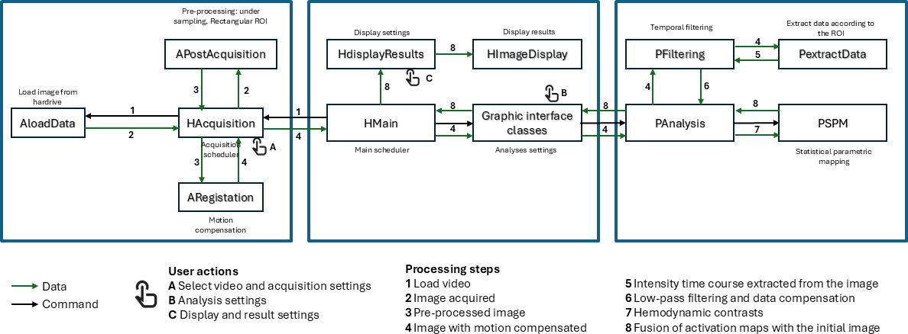

Introduction
fOptics is a software tool for indentifying functional brain areas during neurosurgical procedures using colour cameras.
Installation on Windows
A pre-built Windows installer is available in the Releases section: https://github.com/CCaredda/fOptics/releases
Compilation on Windows
Follow these steps, if you need to compile the code. This program is coded in C++ with the framework Qt and the Microsoft Visual Studio 2022.
Install Visual Studio 2022 (not via the Visual Studio installer, as it will install Visual Studio 2026). Version 2022 is required to work with Qt.
Download visual studio professional 2022: https://my.visualstudio.com/Downloads?q=visual%20studio%202022&wt.mc_id=o~msft~vscom~older-downloads
Install visual Studio professional 2022, and tick the box "Desktop Development with C++". Click on install.
Download the Qt installer: https://www.qt.io/development/download-qt-installer-oss for Windows x64.
- Launch the installer
- CLick on "Personalized installation".
- Tick these boxes:
- Developper Tools/Qt Creator (use the latest version)
- Qt for Developpement/Qt/Qt.x.x.x (choose the latest version)/ MSVC 20022 (or more recent)
- Qt for Developpement/Qt/Qt.x.x.x/Additional libraries/ Qt5 Compatibility Module, Qt Charts, Qt Graphs, Qt Multimedia, Qt Sensors, Qt Serial bus, Qt Serial Port, Qt shader tools, Qt Task Tree
- Do not tick MinGW compiler
Download the latest CMake release and install it: https://cmake.org/download/
Compile Opencv on Windows with msvc22
1) Download opencv:
2) In C:\Downloads, create build directory next to opencv sources:
├─ C:\Downloads\opencv\
│ ├─ opencv\
│ ├─ contrib\
│ └─ build\
3) Open "Developer PowerShell for VS 2022" with administrator privilege. 4) Go to the build directory, for example: cd C:\Users\PRIMES\Downloads\opencv\build
5) Compile Opencv and Opencv-contrib with CMake (adapt the path):
cmake -D CMAKE_BUILD_TYPE=Release -D CMAKE_INSTALL_PREFIX=C:\opencv\install -D OPENCV_EXTRA_MODULES_PATH=C:\Users\ccaredda\Downloads\opencv\contrib\modules -D BUILD_EXAMPLES=OFF -D BUILD_opencv_world=ON -D WITH_OPENMP=ON C:\Users\ccaredda\Downloads\opencv\opencv
cmake –build . –config Release –target INSTALL
6) Add C:\opencv\install\x64\vc17\bin to PATH environment variable
Compile FFTW on Windows with msvc22
1) Download fftw3 sources: https://www.fftw.org/download.html
2) In C:\Downloads, create a build directory next to the FFTW sources.
├─ C:\Downloads\fftw-3.3.10\
│ ├─ src\
│ └─ build\
│ └─ build_f\
│ └─ build_openmp\
3) Open "Developer PowerShell for VS 2022" with administrator privilege.
4) Go to the build directory, for example: cd C:\Users\PRIMES\Downloads\fftw-3.3.10\build
5) Compile fftw with cmake (double precision):
cmake -D CMAKE_POLICY_VERSION_MINIMUM=3.5 -D CMAKE_BUILD_TYPE=Release -D CMALE_INSTALL_PREFIX=C:\fftw -D BUILD_SHARED_LIBS=OFF C:\Users\ccaredda\Downloads\fftw-3.3.10\src
cmake –build . –config Release –target INSTALL
6) Go to the build_f directory, build fftw with float precision:
cmake -D CMAKE_POLICY_VERSION_MINIMUM=3.5 -D CMAKE_BUILD_TYPE=Release -D CMALE_INSTALL_PREFIX=C:\fftw -D ENABLE_FLOAT=ON -D ENABLE_THREADS=ON -D BUILD_SHARED_LIBS=OFF C:\Users\ccaredda\Downloads\fftw-3.3.10\src
cmake –build . –config Release –target INSTALL
7) Go to the build_openmp directory, build fftw with openmp:
cmake -D CMAKE_POLICY_VERSION_MINIMUM=3.5 -D CMAKE_BUILD_TYPE=Release -D CMALE_INSTALL_PREFIX=C:\fftw -D ENABLE_FLOAT=ON -D ENABLE_OPENMP=ON -D ENABLE_THREADS=ON -D BUILD_SHARED_LIBS=OFF -DFFTW3F_LIB=../build/Release/fftw3f.lib C:\Users\ccaredda\Downloads\fftw-3.3.10\src
cmake –build . –config Release –target INSTALL
8) Move directory C:\Program Files (x86)\fftw to C:\fftw
9) Add C:\fftw\lib to the PATH environment variable
Install boost library
1) Download the latest Boost Windows binary for msvc compiler 64 bits: https://www.boost.org/releases/latest/
2) Execute the .exe file with administrator right and install the library in C:\boost
ffmpeg for video reading
1) Open the Windows powershell and go to C:\
cd C:\
2) Download vcpkg:
git clone https://github.com/microsoft/vcpkg.git
3) Install ffmpeg via vcpkg:
cd vcpkg
.\bootstrap-vcpkg.bat
.\vcpkg install ffmpeg:x64-windows
Project Compilation
Before compiling, make sure that the .pro file link to the correct OpenCV version. Change the line OPENCV_VER = 4140 according to your OpenCV version (check filenames in C:\opencv\install\x64\vc17\lib
Software deployment
Deployment scripts can be found in src/script folder.
To deploy the software on Windows, use the bat script windows_create_venv.bat.
Other scripts are available to deploy the software on Linux distributions.
Software architecture
The software architecture is roughly represented by the next figure (to simplify the reading, not all classes are represented in this schematic).

Python code
You can find a set of optional Python scripts in the src/Python folder. They are not required, but they may be useful if you want to customize the rendering of the functional brain maps.
- create_Acquisition_info_file.py can be used to generate the acquisition_info.txt file that must be placed alongside the RGB video file. acquisition_info.txt file contains the frame indices related to patient cerebral activity.
- plot_functional_maps.ipynb can be used to display the functional brain maps computed by the C++ software and customize the visualization, including the colormap and colorbar.
- utils.py contains utility functions for displaying the functional brain maps.
User guide
You can find the user guide here: doc/usage_doc.odt
Generated by